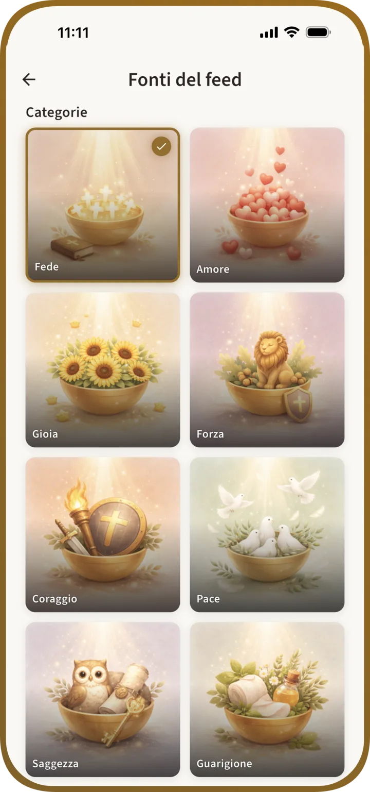
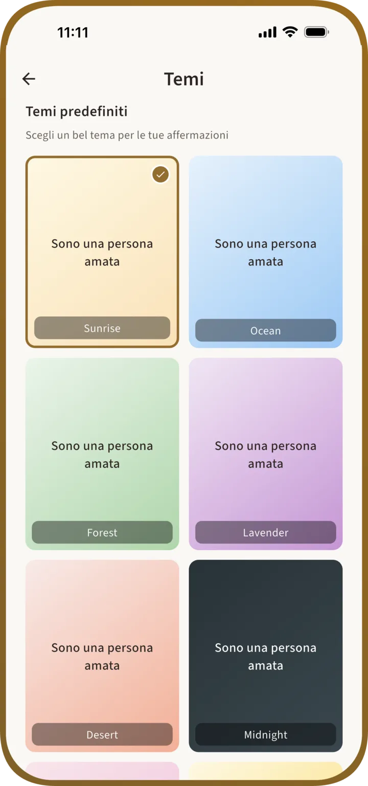

La Pratica
Cosa sono le affermazioni cristiane?
Le affermazioni cristiane ti aiutano a ritrovare la Parola di Dio quando la giornata diventa intensa o incerta. Manna raccoglie affermazioni bibliche in una pratica breve, centrata sulla fede, sulla speranza, sulla pace e sulla tua identità in Cristo.
«Sono fatto in modo stupendo.»
Salmo 139:14«Tutto posso in colui che mi dà forza.»
Filippesi 4:13«Dio non ci ha dato uno spirito di paura, ma di forza, amore e saggezza.»
2 Timoteo 1:7Ogni frase nasce dalla verità biblica. Le affermazioni bibliche offrono un punto fermo quando ansia, lutto, pressione o dubbio rendono più difficile ricordare le promesse di Dio.
«Non conformatevi a questo mondo, ma lasciatevi trasformare rinnovando il vostro modo di pensare.»
Romani 12:2
L’App
Le promesse di Dio, presentate con bellezza.
Scegli gli orari che si adattano alla tua routine.
Affermazioni bibliche quotidiane

Fede per ogni stagione
Pratica senza fretta

Temi
Funzioni
Una pratica quotidiana, non un’altra app.
Affermazioni bibliche quotidiane
Crea un ritmo con affermazioni quotidiane e affermazioni cristiane.
Fede per ogni stagione
Ogni frase nasce dalla verità biblica.
Pratica
La modalità pratica crea spazio per la meditazione cristiana sulla Parola di Dio.
Temi
Personalizza l’esperienza.
Promemoria
Scegli gli orari che si adattano alla tua routine.
Affermazioni Personali
Personalizza l’esperienza.
Perché Manna
Verità nuova ogni mattina.
Una pratica che trasforma.
Radicate nella Scrittura
Ogni frase nasce dalla verità biblica.
Rinnova la Tua Mente Ogni Giorno
Crea un ritmo con affermazioni quotidiane e affermazioni cristiane.
Costruisci una Fede Incrollabile
La modalità pratica crea spazio per la meditazione cristiana sulla Parola di Dio.
Bella e Senza Distrazioni
La raccolta integrata funziona offline e non richiede un account. I tuoi contenuti personali restano sul dispositivo.